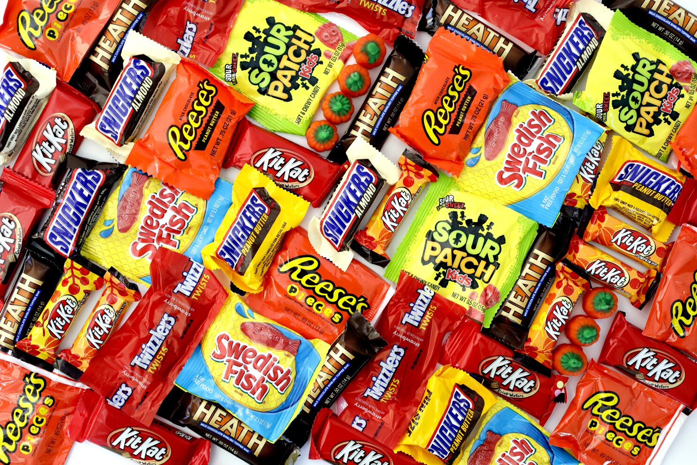

Data Visualization - Self-Paced Work
Follow these instructions to practice your data visualization skills! You are also welcome to explore more on your own, and see what you can create. We recommend continuing in a Google Sheet or a Google Colab notebook. Explore one of the datasets below!
Candy Power Rankings
This dataset compares different types of candy to each other.

Resources
Data Dictionary
chocolate: Does it contain chocolate?fruity: Is it fruit flavored?caramel: Is there caramel in the candy?peanutalmondy: Does it contain peanuts, peanut butter or almonds?nougat: Does it contain nougat?crispedricewafer: Does it contain crisped rice, wafers, or a cookie component?hard: Is it a hard candy?bar: Is it a candy bar?pluribus: Is it one of many candies in a bag or box?sugarpercent: The percentile of sugar it falls under within the data set.pricepercent: The unit price percentile compared to the rest of the set.winpercent: The overall win percentage according to 269,000 matchups.
Sources
Video Game Systems
This dataset has average IGN Review scores by platform and genre.
Resources
Data Dictionary
Platform: The video game console for the games- Genre (
Adventure,Puzzle,Racing, etc): The genre for the games
For example, on the Nintendo DS row, the Fighting column has a value of 6.32. This means that of all the fighting games for the Nintendo DS, the average IGN rating (out of 10) is 6.32!
Sources
NBA Game Data
This dataset contains records for NBA games from 1946-2015. It includes a lot of Elo rating data.
Resources
Data Dictionary
gameorder: Play order of game in NBA historygame_id: Unique ID for each gamelg_id: Which league the game was played in_iscopy: Each row of data is tied to a single team for a single game, so_iscopyflags if this game_id has already occurred for the opposing team in the same matchupyear_id: Season id, named based on year in which the season endeddate_game: Game dateis_playoffs: Flag for playoff gamesteam_id: Three letter code for team name, from Basketball Referencefran_id: Franchise id. Multipleteam_ids can fall under the samefran_iddue to name changes or moves. Interactive is grouped byfran_id.pts: Points scored by teamelo_i: Team elo entering the gameelo_n: Team elo following the gamewin_equiv: Equivalent number of wins in a 82-game season for a team ofelo_nqualityopp_id: Team id of opponentopp_fran: Franchise id of opponentopp_pts: Points scored by opponentopp_elo_i: Opponent elo entering the gameopp_elo_n: Opponent elo following the gamegame_location: Home (H), away (A), or neutral (N)game_result: Win or loss for team in theteam_idcolumnforecast: Elo-based chances of winning for the team in theteam_idcolumn, based on elo ratings and game locationnotes: Additional information
Sources
NFL Players Data
This dataset contains information about current NFL players.
Resources
Data Dictionary
nflId: Player identification number, unique across players (numeric)height: Player height (numeric)weight: Player weight (numeric)birthDate: Date of birth (M/D/YYYY)collegeName: Player college (text)position: Player position (text)displayName: Player name (text)
Sources
Titanic Passenger Data
This dataset contains information about passengers on the Titanic.
Resources
Data Dictionary
Survived: Whether the passenger survived or notPclass: Passenger ticket class (first, second, or third)Name: Passenger's nameSex: Passenger's sexAge: Passenger's ageSiblings/Spouses Aboard: Number of siblings/spouses also aboard the TitanicParents/Children Aboard: Number of parents/children also aboard the TitanicFare: Amount paid for ticket (in pounds)